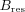
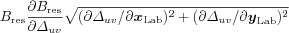

resfields
Synopsis
Compute cw EPR resonance fields, amplitudes and line widths.
Pos = resfields(Sys,Param)
Pos = resfields(Sys,Param,Opt)
[Pos,Amp] = resfields(...)
[Pos,Amp,Wid] = resfields(...)
[Pos,Amp,Wid,Trans] = resfields(...)
[Pos,Amp,Wid,Trans,Grad] = resfields(...)
Description
resfields computes resonance fields, line intensities and line widths for
cw EPR spectra.
Sys is a
spin system structure
containing all parameters of the spin system.
Params is a
structure containing the following experimental parameters.
CenterSweep |
Defines the center field and sweep width [center sweep] of the
field range which is searched for resonances, in units of mT, e.g. Exp.CenterSweep=[310 100].
Only resonances within this range are returned by resfields.
The field search range can be specified either in CenterSweep
or in Range. If both are given, CenterSweep has precedence.
|
Range
|
Defines the field range [Bmin Bmax] which is searched for resonances,
in units of mT. Only resonances within this range are returned by resfields.
The field search range can be specified either in CenterSweep
or in Range. If both are given, CenterSweep has precedence.
|
mwFreq
|
Gives the spectrometer's operating frequency in GHz.
|
Orientations
|
A list of orientations for which resonance fields
should be computed. It can be either a 2xn or a 3xn array, containing
the orientations along columns. Either two (φ, θ) or three
(φ, θ, χ)
Euler angles
(in radians) characterise
each orientation.
φ, in the first row, is the angle between the x axis and the xy
plan projection of the orientation of the external field in the reference
frame of the spin system. θ, in the second row, is the
angle at which the external field is off the z axis of the reference
frame. The optional χ, in the third row, specifies the third
Euler angle and fixes the x axis of the laboratory in the reference
frame of the spin system.
Altogether, these three angles define the relative orientation between
the molecular reference frame and the laboratory coordinate system.
Resonance fields depend only on the first two
angles, intensities also on the third.
If the third angle is not given, EPR intensities are integrated over
all possible values of χ.
|
Temperature
|
scalar (default inf) or vector
This field specifies populations
for the states of the spin system, either directly or via a temperature.
Thermal equilibium:
Temperature is the temperature of the spin system in the
EPR experiment, in Kelvin. If given, Boltzmann populations are computed
and included in the EPR line intensities. E.g., Temperature = 298
corresponds to room temperature. If not given (or set to inf), all
transitions are assumed to be equal polarizations.
Non-equilibrium populations:
Temperature can also be used to specify non-equilibrium populations.
For a spin system with N electron states (e.g. 4 for a biradical),
it must be a vector with N elements giving the
populations of the zero-field electron states, from lowest to highest in energy.
E.g., if Temperature = [0.85 0.95 1.2] for an S=1 system, the
population of the lowest-energy zero-field state is 0.85, and the highest-energy
zero-field state has a population of 1.2. The populations of all nuclear
sublevels within an electron spin manifold are assumed to be equal.
|
Mode
|
'perpendicular' (default) or 'parallel'
Determines the cw EPR mode. In the perpendicular mode, the microwave field B1 is along the laboratory x axis, in the parallel mode it is along the z axis, parallel to the external static field B0. The perpendicular detection mode is by far the more common.
|
CrystalSymmetry |
Specifies the symmetry of the crystal. The crystal symmetry can
be either the number of the space group (between 1 and 230), the symbol of the
space group (e.g. 'P21212' or the symbol for the point group
(e.g. 'C2h' or '2/m').
Exp.CrystalSymmetry = 'P21/m'; % space group symbol
Exp.CrystalSymmetry = 11; % space group number (between 1 and 230)
Exp.CrystalSymmetry = 'C2h'; % point group, Schönflies notation
Exp.CrystalSymmetry = '2/m'; % point group, Hermann-Mauguin notation
When CrystalSymmetry is given, resfields automatically computes
the spectra of all symmetry-related sites in the crystal. If CrystalSymmetry
is not given, resfields assumes space group 1 (P1, point group C1), which has
only one site per unit cell.
|
The structure Opt contains computational options. The separate fields as
well as the structure as a whole are optional. If a field or the structure are
missing, the function defaults to standard settings.
Transitions
|
mx2 vector of integer
Determines the transitions (state pairs) which are used in the resonance field
calculation. If given, resfields uses them and skips its
automatic transition selection scheme. State pairs are specified in
Transitions(k,:) by the level numbers which start with 1 for the
lowest-energy level. E.g., Opt.Transitions=[1 3; 2 6; 4 6]; specifies
three transitions, where the third is between levels 4 and 6.
|
Threshold
|
Specifies the threshold for resfields's transition pre-selection. Any
transition with an estimated relative average amplitude less than this number is
not included in the calculation. The relative average amplitude of the
strongest transition is 1, the default is 1e-4. The pre-selection is
an approximate procedure, and it might miss transitions for complicated spin systems.
In these cases, setting it to zero will include all transitions in the computation.
|
![[eqn]](eqn/resfields1.png)
There are five outputs from resfields. Line positions are returned
in matrix Pos, in units of mT. The various transitions are along columns,
each column corresponding to a separate orientation. The Int output
contains the intensities, with the same layout as Pos. Line widths are in
Wid, again in mT. Trans is the list of computed transitions. This list
has the same format as the Transitions option in Opt. Grad contains
the magnitudes of the orientational gradient.
of all the resonance fields


where
.
Examples
A comparison between the resonance field position obtained from resfields
(spline modelling approach) and eigfields (exact solution) shows that
differences are negligible.
First we compute the resonance fields for an axial spin system with
two equivalent protons.
Sys = struct('S',.5,'g',[2.3,2.3,2],...
'Nucs','1H,1H','A',[10 10 500; 10 10 500]);
Exp = struct('mwFreq',9.5,'Range',[200 400]);
[p,t] = sphgrid('Dinfh',201);
Exp.Orientations = [p;t];
x = resfields(Sys,Exp);
Next we compute line positions using eigfields, which is much slower.
xr = [];
for i=1:length(p)
Exp.Orientations = [p(i);t(i)];
xr(:,i) = eigfields(Sys,Exp);
end
After plotting the result
h = plot(t*180/pi,xr,'k.',t*180/pi,x,'r');
ylim([290 360]);
xlabel('theta [deg]'); ylabel('field [mT]');
we see that the resonances obtained by the two methods are practically identical.
See also
eigfields,
garlic,
levels,
levelsplot,
pepper